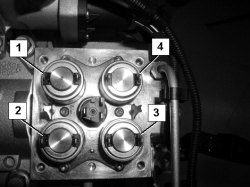

2127CA CHECKING THE OPERATION OF THE ROBOTIZED GEARBOX SOLENOID
- Path
- Test > 21 GEARBOX UNIT > 2127 ELECTRO-HYDRAULIC SELECTION GEARBOX EXTERNAL CONTROLS > 2127C HYDRAULIC GEAR SELECTION SYSTEM > 2127CA CHECKING THE OPERATION OF THE ROBOTIZED GEARBOX SOLENOID
- Kind
- test / check procedure
- Applies to
- engines: 2.2 JTS; all production periods; only with equipment: Smart gearbox
- Interactive page
- https://sloeber94.github.io/elrnDB-aBrrSpdr/en/#/946004565
Applies to: engines: 2.2 JTS; all production periods
STEP | CHECK TO BE PERFORMED | REMEDIAL ACTION IF THE CHECK IS NOT OK |
|---|---|---|
1 | ON-OFF solenoid check for range selection Check that the solenoid resistance value is 5 Ohm ± 10% at 20°C | Replace gear selection solenoid Op. 2127C56 CLUTCH CONTROL SOLENOID - R.R. If Ok, replace the robotized gearbox control unit Op. 2127E10 HYDRAULIC SPEED SELECTION SYSTEM CONTROL UNIT - R.R. |
2 | Check flow rate proportional solenoid valve for controlling the clutch Check that the solenoid resistance value is 3 Ohm ± 10% at 20°C | Replace the clutch control solenoid Op. 2127C56 CLUTCH CONTROL SOLENOID - R.R. If Ok, replace the robotized gearbox control unit Op. 2127E10 HYDRAULIC SPEED SELECTION SYSTEM CONTROL UNIT - R.R. |
3 | Check even gears engagement proportional pressure solenoid valve Check that the solenoid resistance value is 3 Ohm ± 10% at 20°C. | Replace even gears solenoid Op. 2127C56 CLUTCH CONTROL SOLENOID - R.R. If Ok, replace the robotized gearbox control unit Op. 2127E10 HYDRAULIC SPEED SELECTION SYSTEM CONTROL UNIT - R.R. |
4 | Check odd gears engagement proportional pressure solenoid valve Check that the solenoid resistance value is 3 Ohm ± 10% at 20°C | Replace odd gears solenoid Op. 2127C56 CLUTCH CONTROL SOLENOID - R.R. If Ok, replace the robotized gearbox control unit Op. 2127E10 HYDRAULIC SPEED SELECTION SYSTEM CONTROL UNIT - R.R. |

1. Clutch control proportional solenoid valve
2. Even gears engagement proportional pressure solenoid valve
3. Odd gears engagement proportional pressure solenoid valve
4. ON-OFF solenoid for range selection